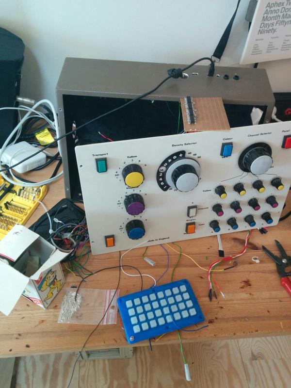
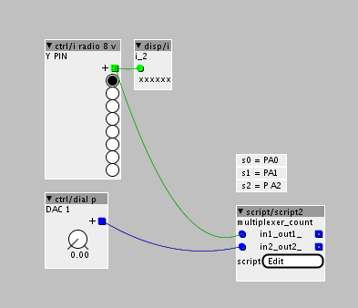

@paul right sorry. Using a slightly different datasheet. I'm converting my controller from a teensy to Axoloti. I was using this earlier https://www.pjrc.com/teensy/td_midi.html
[GPIO I/O] Example 4051 de/multiplexer reads 8 analog sources
paul
#6
no, I should explain and show it more clearly. Your request improved my explanation. So it's more clearly for others. By the way, the axoloti offers many analog in pins which can be read faster then using a 4051.
The next days, I will add a description for a MCP3208 SPI ADC. At the moment it's working fine with axoloti but the code in the script object has to be optimize.
kaos
#7
ok, I soldered everything, but I cannot get it to compile on my previous axoloti (V0.3) It compiles fine on the new one that shipped with kickstarter, unfortunately that one hasn't got 15 pots soldered to it...
probably this is not going to be fixed I guess...(as no one else has this board)
../chibios/boards/ST_STM32F4_DISCOVERY -I../chibios/ext/fatfs/src -I../firmware -MD -MP -c xpatch.cpp -o xpatch.o
xpatch.cpp: In member function 'msg_t rootc::instancescript__1::ThreadX2()':
xpatch.cpp:67:17: error: a function-definition is not allowed here before '{' token
void setup(void){
^
xpatch.cpp:75:16: error: a function-definition is not allowed here before '{' token
void loop(void){
^
xpatch.cpp:102:1: error: expected '}' at end of input
}
^
make: *** [all] Error 1
shell task failed, exit value: 2
paul
#8
strange. I can't say any about previous board. My STM32 disco board don't work with latest axoloti software. If I want to use the STM32 I have to compline manually the axoloti ver. 1.0 and run it by entering ./axoloti.sh on terminal (mac user). Do your V3 board works normal with other patches?
I checked the 4051 and uploaded it to my stm32 a few minutes ago.
edit: Do you have update the FW of your V3 board? Maybe Johannes can say more about this error.
kaos
#9
the board works with at least some of the demo patches, it's missing USB host and has way less RAM to play with... not a problem for this...
now focussing on recompiling the whole thing from source, seems to work, but I have errors in the firmware compilation now. I'll ping Johannes
paul
#10
if you can't get the script working, you can try to trigger the single s0…2 pins by manual patch. It's maybe not the faster solution but it should work.
you can use MartijnVerhallen clock divider patch and connect the decoding outputs to single digital out objects.
clock divider
kaos
#11
got it working!
very smooth, a bit of jitter though is that why I should "decouple." can you describe how decoupling works?
this is what it looks like, I hope to add the adafruit trellis modules next

paul
#13
nice to hear and your panel design looks sweet.
I never studied electrical engineering, so my answer is roughly. a cpacitor needs some time to get its voltage field loaded. The time it's needed to get loaded depends on the voltage, which is feeding to the capacitor and the capacity of your capacitor.
this pic make it more clear (red line is the input voltage; black voltage of capacitor)
wikipedia
Together with a potentiometer a capacitor is working as a variable low pass filter.
Shortly, a capacitor nearby the analog input of your 4051 will stabilize the voltage and filters fast voltage drops but capacitor makes it also a bit sluggish.
by the way, the trellis module uses an I2C communication. Can you share your code, if you get it working? Check axoloti archiv dir for a I2C example from johannes.
kaos
#14
@paul, @MartijnVerhallen, The panel was stripped from an analog color picture developing machine.
@paul, on the decoupling, I know what a capacitor is and how it works, but for the sake of clarity is this how it should work?
I'll report back on the trellis ASAP
paul
#15
@kaos oh sorry, I misapprehend you. Capacitor should stabilize the input signal.
Your circuit seems right, but the other leg of capacitor should be connected to GND not VDD.
How big is the jittering? When I tested my 4051s, there was only a small jittering +/- 0.50. One thing you can try would be, to set a longer delay to select the a channel. It's "chThdSleepMilliseconds(1);" line at the end of the script. By using a higher delay rate (= longer channel selection) with less jittering as before, the jittering would be a problem of the script and not a hardware issue.
If a small resoldering is not a huge mess, you can try a mcp3208 adc. With this IC, don't get any jitters.
here is a pinout picture: MCP3208
This is my actually working code for the mcp: script
kaos
#16
tried 1 ms delay and 50 ms delay. Actually it's quite ok at 5ms i have way less than +/- 0.5 it's more something like +/- 0.1.
About resoldering, huge mess I think  actually I would have to resolder 4 4051s, so no. About the 4 though, I cannot see anywhere in the script where you asign the "z" connection to axo.
actually I would have to resolder 4 4051s, so no. About the 4 though, I cannot see anywhere in the script where you asign the "z" connection to axo.
int z = adcvalues[8]<<15;I want to make it
int z1 = adcvalues[8]<<15;
int z2 = adcvalues[8]<<15;
int z3 = adcvalues[8]<<15;
int z4 = adcvalues[8]<<15;to read out 32 values
is adcvalues an array of GPIOs on axo? where is it documented?
(I'll start a different thread on my trellis efforts soon btw)
paul
#17
I copied & edited the code "adcvalues[inputpin]" from the object editor of analogin object in axoloti software.
the number in the brace stands for a single adc port.
Here is a overview of the GPIOs:
the number after equal sign is the variable name of the input pin which should be paste in the braces
PA0 (ADC1_IN0) = 0
PA1 (ADC1_IN1) = 1
PA2 (ADC1_IN2) = 2
PA3 (ADC1_IN3) = 3
PA4 (ADC1_IN4) = 4
PA5 (ADC1_IN5) = 5
PA6 (ADC1_IN6) = 6
PA7 (ADC1_IN7) = 7
PB0 (ADC1_IN8) = 8
PB1 (ADC1_IN9) = 9
PC0 (ADC1_IN10) = 10
PC1 (ADC1_IN11) = 11
PC2 (ADC1_IN12) = 12
PC3 (ADC1_IN13) = 13
PC4 (ADC1_IN14) = 14
one hint to filter adc jitter by code. you can try to sample the read value and compare upcoming value to the last read one. If it's change by e.g. 5%, the adc should send the new value to the y dials…
hesspet
#18
Some addtional troubleshooting hints with the 4051:
Important! Not all versions of the 4051 will work stable in a 3,3 envirionment If Vee == GND.
e.g. the 4051 HCT has specification:
VCC-GND min: 4.5, typical: 5.0 max:5.5 V
e.g. the 4051 HC has specification:
VCC-GND min:2.0, typical: 5.0, max:10.0 V
So when you use the HCT version with the AXO, you'll run into a lot of strange problems . It works, sometimes - but outsite the specification. This is good if you plan to build an Lunetta :-), but for a multiplexer this can be worse.
BTW: 100nf between Vcc and GND could save a lot of problems in such breadboard environments. Put the cap close as possible to the pins! Or better solder the cap on top over the chip.
FYI: More about the voltages on page 6:http://www.nxp.com/documents/data_sheet/74HC_HCT4051.pdf
This is if you like to use DIPs.
But better would be a version like this:HD74LV4051A
the shortcut LV / LVC gives you a hint of LowVoltage. Those Chips are made for the use with 3,3V. They are hard to get sometimes and hard to solder. Only SMD available. If you have luck, SOIC14 is available. This is one of the disadvantages of the 3,3 voltage for tinkerer (and breadboard testing)
Or use a "level shifter" between the Axo board and the "normal" CMOS 5V world. Since I work with 3,3 I allway have some 8 Line Levershifter breakouts in stock......
The last: Be aware, if you use a 4051, you lose aprox. 0,4 of you incomming signal inside the chip. This is normal!
rbrt
#21
Hi Paul,
could you sketch up an example how to write to the 4051's pins,
instead of reading them?
I want to multiplex the Axoloti's 2 analog outputs (PA4 + PA5),
in order to create a simple control-rate patching matrix...
I'm all new to the Axoloti and c-scripting as well,I understand some parts
of your script but not enough...
cheers
Robert
paul
#22
hi @rbrt ,
sorry, I'm not at home so I can't test the following code example.
You want to route the DAC1 output to any Y output pin of the 4051 like this:

axoloti Patch: 4051 DAC out PA4,5.axp (2.8 KB)

some parts of the code are from the "./out/analog.axo" object. An other solution will be to use a separate "./out/analog.axo" object and the script object only controls the Y pins of the 4051.
SCRIPT OBJECT CODE:
/*
marked comments with "*" are from axoloti "script" object
code isn't tested
*/int i; // select y-input
void setup(void){
palSetPadMode(GPIOA,0,PAL_MODE_OUTPUT_PUSHPULL); // s0 Pin of 4051
palSetPadMode(GPIOA,1,PAL_MODE_OUTPUT_PUSHPULL); // S1 Pin of 4051
palSetPadMode(GPIOA,2,PAL_MODE_OUTPUT_PUSHPULL); // s2 Pin of 4051palSetPadMode(GPIOA, 4, PAL_MODE_INPUT_ANALOG); // DAC OUTPUT PA4* palSetPadMode(GPIOA, 5, PAL_MODE_INPUT_ANALOG); // DAC OUTPUT PA5*RCC->APB1ENR |= 0x20000000; // *
DAC->CR |= 0x00030003; // *i = 0;}
void loop(void){
i = in1; //script object in1 controls 4051's Y output selection if (i == 8) { i = 0; } palWritePad(GPIOA,0,((i& 0x01) > 0)); // write s0 palWritePad(GPIOA,1,(((i>>1)& 0x01) > 0)); // write s1 palWritePad(GPIOA,2,(((i>>2)& 0x01) > 0)); // write s2 // select pin of the 4051 and route the DAC output value to it. switch (i){ case 0: DAC->DHR12R1 = in2>>15; // check "input 1" of the "script" object and control DAC PA4 * /*DAC->DHR12R2 = in2>>15; // check "input 2" of the "script" object and control DAC PA5* */ break; } chThdSleepMilliseconds(5); // short delay}
I hope this may help you.
rbrt
#23
Hi Paul,
thanks a lot for the inspiration!
looks like right now I'm rather stuck with my little project:
My intention is to build a 'hardware' patching-matrix using REAL WIRES,
something like 4-8 analog outputs and inputs..
so, I've been attempting to multiplex the axo's A4 analog output with the 4051.
I actually got there, but I need to sample and hold the 4051's outputs somehow.
right now this is done inside the custom object I wrote
(you need the 1.07 release version to run the patch!!)
but once I rearrange them WIRES in the REAL WORLD, it's all loosing sync...
so, do you have any idea about how to sample and hold the 4051's outputs?

#/media/File:Ladevorgang.svg){kind=link}
{kind=link}
ah,you have to wire things up like this:
(I'm referring to your first post)
z = A4
y0 = A6
y1= A7
y2=B0
y3 =B1
4051 multiplexing.axp (7.3 KB)
paul
#24
I deleted the axoloti 1.0.7 version and I'm using the stable version 1.0.6. Can you upload your axo object here, so I can watch your object code.
do you have used an array to store/recall PA4 write values?